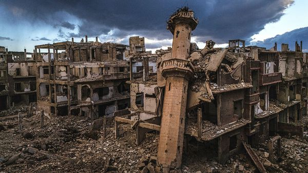
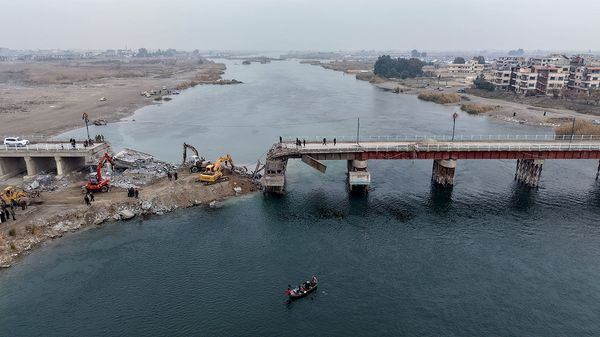

Jul 09, 2026 05:23 AM | DAMASCUS AND HOMS

On july 6th Emmanuel Macron, the French president, became the first major Western leader to visit Syria since the toppling of the Assad dictatorship. He brought with him a coterie of French ceos. Mr Macron’s host, Ahmed al-Sharaa, al-Qaeda-militant-turned-statesman, must have been thrilled. He has chased foreign investment and recognition since seizing power 19 months ago. The two bombs that rocked central Damascus the next morning were far less welcome. They are a reminder of the limits of Syria’s recovery.
Nowhere is that clearer than in Jobar, a once-thriving suburb in north-east Damascus. Today it is littered with the concrete shells of looted apartment buildings and the ruins of mosques and shops. There is no mobile-phone signal. Nor is there much evidence of anything being rebuilt.
Since Bashar al-Assad’s regime was overthrown, the much-touted reconstruction of a country devastated by civil war has yet to materialise. A slew of agreements with foreign and domestic firms and a big investor conference in June grabbed headlines. But on the ground frustration is growing. Bureaucracy and old regulations that are “designed for corruption” are choking progress, says a local businessman. Petty graft, political infighting and broken promises are sapping optimism.

Syria needs to rebuild everything, from houses, roads and bridges to energy and water infrastructure and its patchy telecoms network. One-third of its physical assets have been destroyed. The World Bank puts the total reconstruction costs at $216bn, ten times Syria’s gdp in 2024.
Syria is painfully strapped for cash. Strict withdrawal limits mean few Syrians are willing to deposit their savings in local banks. Bereft of capital, banks are unable to extend loans. The Syrian pound, a managed currency, has continued to fall against the dollar in recent months.
Still, if Mr Sharaa has succeeded at anything, it is at diplomacy and drumming up investor interest. His government, he declares, does not want to rebuild Syria “through aid and assistance” but through investment. He has struck up an improbable rapport with Donald Trump, who has eased American sanctions. And he has capitalised on growing interest among Gulf rulers in Syria as a strategic hub, especially after trade through the Strait of Hormuz was choked off.
Gulf investors zoom into Damascus by private jet. Gulf commercial airliners fly in multiple times a day. Qatar has taken the lead: ucc, a construction firm, already has spades in the ground. It is redeveloping an airport that it hopes to open at the end of summer and is ploughing billions of dollars into Syria’s power plants. The Qataris have also acquired a Syrian bank, which will make it easier for them to move money into the country. And they plan to finance a big affordable-housing project in the coming months.
The Emiratis have also shaken off their early wariness of Mr Sharaa. In May Mohamed Alabbar of Emaar, a big property firm in the United Arab Emirates (uae), said he was looking at $18bn-worth of projects in Syria. Emirati delegations have descended on Damascus in recent months to discuss transport, trade and a logistics corridor. Saudi companies and its government have pledged more than $5bn. stc, its biggest telecom firm, is building a 4,500km-long fibre-optic network, data centres and subsea cable-landing stations worth $800m. On June 30th Syria awarded a $750m licence to Zain, a Kuwaiti telecoms operator, which wants to roll out 5g.
Syrians themselves are also getting in on the action. Hadi Aladdin, a Canadian-Syrian tech entrepreneur, also aims to build a data centre. Samer Chamsi-Pasha, a recently returned exile from a famous merchant family, is lobbying the government to redesignate a disused military airport in Homs for civilian use so he can launch a flight school.
Even some American firms are tiptoeing in. Visa and Mastercard have said they are returning. American oil companies will not invest directly but are partnering with regional firms to dip into Syrian oilfields. JPMorgan Chase, an American bank, along with two Gulf lenders, hopes to arrange a $7bn loan, guaranteed by a state-backed Qatari bank, to fund projects led by ucc.
For most Western investors, doing business in Syria is still tough. America has, in theory, declared an end to its sanctions there. In reality, a raft of restrictions still prevent big American firms from entering en masse. European and American investors are also confused by the government’s strategy. At a un confab in June, one minister proclaimed a free-market economy, only for another to declare a desire for a “free, planned” one.
Syrians, meanwhile, worry that Mr Sharaa has been so busy with diplomacy and investors that he has ignored other problems. Many are disappointed that he has not done more to pursue Mr Assad’s cronies; last month, crowds marched on the homes of officers of the former regime, killing some. Investment conferences and presidential visits are welcome. But one in four Syrians live in extreme poverty. They will judge Mr Sharaa when places such as Jobar are rebuilt. ■
Sign up to the Middle East Dispatch, a weekly newsletter that keeps you in the loop on a fascinating, complex and consequential part of the world.